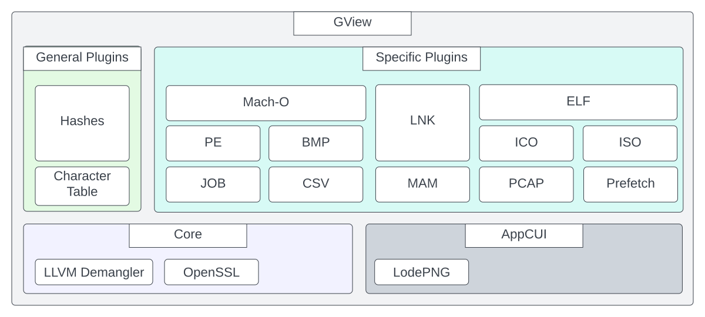
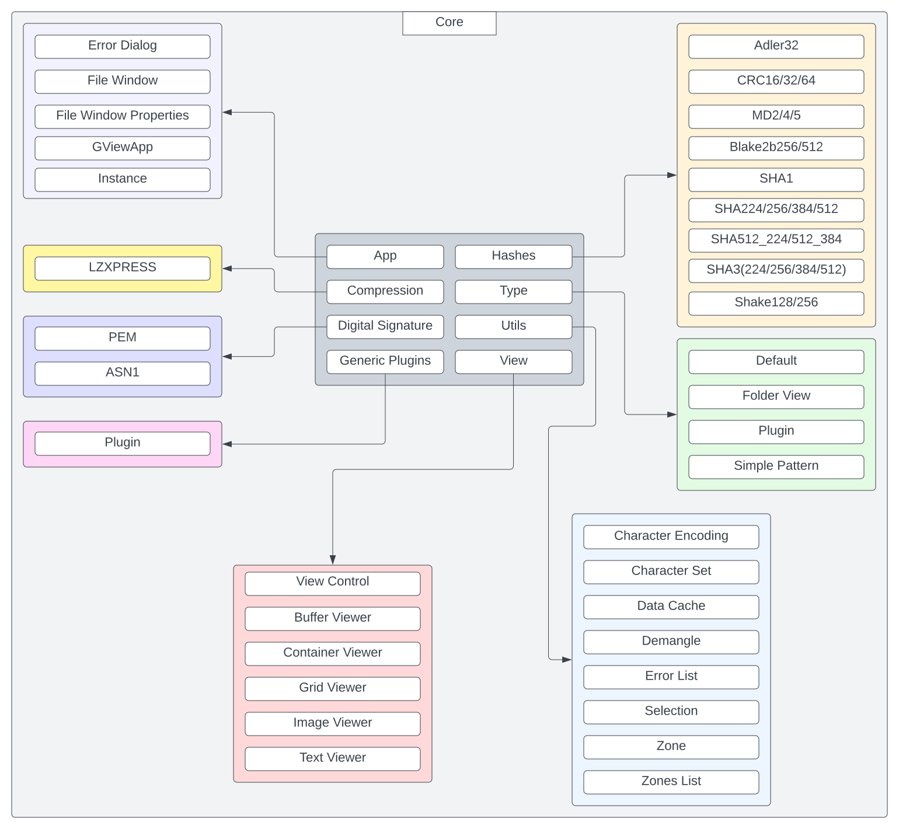

GView architecture
Architecture flow
Content type — Determine whether the content is binary or textual. For text, detect encoding and decode to a standardized format (e.g. UTF-16).
Plugin selection — Search available data identifier (Type) plugins for one that can interpret the data. If none matches, fall back to a generic plugin that only distinguishes binary vs. text.
Viewers and extraction — The chosen Type plugin selects suitable smart viewers. Users can switch viewers and use them to extract artifacts or data from the content.
Iteration — Repeat steps 1–3 for extracted components, using artifacts from previous steps to drive further analysis.
Directory structure
GView/
├── AppCUI/ # UI framework (subproject, separate repo)
├── GViewCore/ # Core library
│ ├── include/
│ │ └── GView.hpp # Public API for plugins
│ └── src/
│ ├── include/Internal.hpp
│ ├── App/ # Application logic, dialogs
│ ├── View/ # Smart viewers (Buffer, Text, Lexical, Image, Grid, Dissasm, Container)
│ ├── Utils/ # DataCache, ZonesList, ErrorList, etc.
│ ├── Hashes/ # Hash implementations
│ ├── Decoding/ # Base64, ZLIB, etc.
│ ├── DigitalSignature/
│ ├── Dissasembly/ # Capstone wrapper
│ ├── Security/ # Restricted mode, crypto
│ └── Type/ # Plugin loading and type matching
├── GView/ # Main executable
├── Types/ # Type plugins (PE, ELF, MACHO, PDF, PCAP, ZIP, CSV, etc.)
├── GenericPlugins/ # Generic plugins (Hashes, EntropyVisualizer, Dropper, SyncCompare, Unpacker, etc.)
├── cmake/
├── docs/
└── build/ / bin/
Code structure
GViewCore — Core library: application logic, smart viewers, hashes, decoding, digital signatures, disassembly, plugin loading. Plugins use only
GView.hpp.GView — Main executable.
Types/ — Type-specific plugins (PE, ELF, Mach-O, PDF, PCAP, ZIP, CSV, INI, JS, etc.).
GenericPlugins/ — Generic plugins (Hashes, EntropyVisualizer, Dropper, SyncCompare, Unpacker, CharacterTable, FileDownloader).
AppCUI — Terminal UI framework (subproject).
Diagrams
High-level architecture:

Core (GViewCore) architecture:
